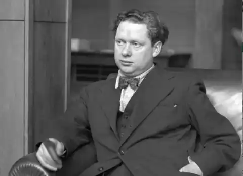

ТОМАС, Ділан (Thomas, Dylan — 27.10.1914, Суонci — 09.11.1953, Нью-Йорк) — англійський письменник.Томас народився у невеличкому приморському містечку Суонсі (графство Ґламоргеншир, раніше — Кармантеншир) у Велсі. Він зростав не дуже здоровою дитиною, слабував на хронічну астму та бронхіт, часто пропускав уроки у школі, де батько викладав англійську мову. Це був, до речі, єдиний предмет, з якого майбутній поет устигав. Віршувати, за власним зізнанням, розпочав в одинадцять років, а в школі був редактором газети. Батько хотів, щоби син продовжив освіту, проте Томас уже в шістнадцять років пішов працювати, влаштувавшись репортером місцевої газети "Саус Велс дейлі пост". Тут він проходив школу життя, вчився спостерігати і занотовувати. У цей самий період, поряд із крихітними "інформаціями" в періодиці й оглядами провінційної хроніки, наполегливо працював над циклом віршів.
Залишивши на певний час репортерську роботу, Томас спробував стати актором-самоуком. Проте це був лише епізод у його житті. Натомість в окремих періодичних виданнях починають з'являтися його перші поетичні публікації. Тут доречно буде зауважити, що книга його ранньої поезії вийде друком лише у 1968 p., коли нотатники поета видасть бібліотека університету Баффало у США, а згодом, у 1971 p., вийде збірка "Ділан Томас. Вірші". Збірку підготує до друку давній друг поета Деніел Джоне, і включить він у це видання 163 вірші, які вони написали спільно з Томасом у дитинстві та юності.
А тимчасом 19-річний Томас вирішив покинути все і поїхати в Лондон — завойовувати столицю. Юний валлієць привернув до себе увагу, і наприкінці 1934 р. вийшла перша збірка Томаса "18віршів" ("18 Poems"), що зробила його відомим. Цей стартовий виступ виявився настільки зрілим, що дає право вважати, що саме тоді сформувався ранній Томас. У центрі поезії Томаса впродовж усього творчого шляху одне і те саме філософське питання: що перемагає — життя чи смерть. Поет постійно підкреслює: людина гине так само, як квітка, як зірки всесвіту, як усі без винятку жертви часу; проте знову і знову бере гору життя — і все повторюється в одвічному русі. Світ Томаса вражає. Спочатку видається, що всі логічні зв'язки тут розірвано, що панує лише чуттєва стихія. Виникають два суперечливі відчуття: світ поета ніби й такий самий, що і навкруги, проте виявляється, що речі, зміст яких уявлявся чітким і зрозумілим, набувають у нього додаткових значень. Томас багато і часто виступав із публічним читанням своїх віршів — іноді в широкому колі шанувальників, іноді в літературних салонах. У ці роки у Томаса виник швидкоплинний роман у листах із майбутньою відомою письменницею П.К. Джонсон (вона згодом стане дружиною чільного представника англійської літератури Ч.П. Сноу). їх вабило одне до одного, тільки їй було дуже прикро, що Т. багато п'є і навіть не вважає за потрібне приховувати це від неї. У липні 1934 р. поет проти волі батьків одружився. Його обраниця Кетлін готова була ділити з ним усі злигодні. Подружжя відразу покинуло Лондон і постійним місцем проживання обрало велське рибальське сільце Ларн. У 1936 р. вийшла друком нова збірка Томаса — "Двадцять п'ять віршів" ("Twenty Five Poems"), 1936). Дивовижна уява, напівмістичний світ, який створив поет, відкривають читачеві нові горизонти власного буття. Свої вірші поет часто називав "заявами дорогою до могили". У серпні 1939 р. з'явилася збірка "Карта любові" ("Мар of Love"), у якій уперше разом були представлені поезія та проза — шістнадцять віршів і сім оповідань, невеликих ліричних експромтів, надзвичайно поетичних, дещо сюрреалістичних. Ці перші своєрідні вірші у прозі (як і подальші твори у жанрі новели) мали спільну географію — рідний поетові Велс. Головні дійові особи — діти, божевільні, поети. У цих оповіданнях відбуваються фантастичні історії, але перед читачем не якась сповідь божевільного чи чийсь потік свідомості, а величезний континент уяви, сповнений бажань — дійти до сутності речей, вистраждати і сприйняти, відкрити і подарувати. З початком у Європі Другої світової війни Томас спробував піти добровольцем на фронт, проте медична комісія забракувала його через стан здоров'я. Томас вважав своїм громадянським обов'язком зайнятися суспільно корисною справою, і почав виступати на радіо з програмами, спеціально підготовленими для Бі-Бі-Сі. Від жахіть війни рятували ще й дитячі спогади. Буденні і світлі оповідання циклу "Портрет художника у віці щеняти" ("A Portrait of an Artist as a Young Dog", 1940) вражають оптимізмом і вірою у майбутнє. Це казкова, майже чарівна проза, в чомусь наївна, але неодмінно щемлива і задушевна. Слід зазначити, що всі новели Томаса автобіографічні, всі вони — спогади. Відразу після "Портрета..." Томас розпочав "безкінечний" (авторське означення) роман "Пригоди із заміною шкіри". Оскільки письменник його так і не закінчив, перед нами три частини твору, три оповіді, об'єднані одним героєм — молодою людиною, котра відправляється із провінції у столицю, щоби знайти себе, оскільки впевнена, що у неї є інше призначення. Томас з гумором описує — і це очевидно — свої власні відчуття від перших лондонських вражень. Він навмисно вводить героя в абсурдні ситуації, ставить його у незручне становище. Він насміхається як із наївного юнака, так і з його досвідчених наставників. Життя — театр, повторює поет давню істину, але це звучить достатньо оригінально і не може не привернути уваги. Упродовж усього життєвого шляху Томаса переслідували фінансові негаразди, грошей завжди катастрофічно не вистачало. Лише впродовж шести років (1940—1946) він мав постійний заробіток: окрім того, що робив передачі на Бі-Бі-Сі, ще й підробляв як редактор-сценарист короткометражних фільмів "Стренд" у Лондоні. Досвід цього ремісництва знадобився пізніше, коли Томас написав (утім, на замовлення) сценарій художньої стрічки "Лікар і диявол ". Але найголовніше — ця робота стала для нього своєрідною розминкою перед написанням, можливо, найголовнішої праці життя — п'єси "У затінку Молочного Лісу" ("Under Milk Wood"). Славу Томасу-поета примножила збірка 1946 р. "Смерті та народження" (нові двадцять п'ять віршів), після гучного успіху якої він став живою легендою, "народним бардом". Складна образність і синтаксис поезії Томаса давали привід зараховувати поета до багатьох новомодних рухів, літературних груп. У своєму "Поетичному маніфесті", написаному у 1951 р., поет стверджує, що не має права відмовлятися у віршах ні від чого: він дозволяє собі і нові словотвори, й асонансні рими, і збій ритму, тобто прагне до максимального використання всіх існуючих засобів виразності: Вже мій тридцятий рік під небесамиВід шуму гавані й зелених пущ збудився,І мушлі тислись, і ступала чапляНа берег;Це ранковий клич —Серед хоралу хвиль, і чайок, і граків І серед стукоту човнів об трухлу пристаньТієї ж митіУвійтиВ досвітнє місто й далі шлях верстати.Мій день народження почавсь з птахівНадморських, і з дерев крилатих, що несли Ім'я моє над селами й над кіньми;І встав яВ осінь дощову,І вирушив у путь крізь зливу власних днів...("Вірш у жовтні", пер. М. Москаленка)Твори, що ввійшли у "Вибране" ("Collected Poems", 1953), підсумкову книжку, — це зібрання образів, у яких різні обличчя, і кожен читає їхні історії на свій лад. Томас не лише приголомшує стрімкістю, пристрасністю, гарячковим феєрверком слів, а підкоряє глибокими філософськими роздумами, здатністю надавати слову, залежно від необхідності, одне, два чи декілька значень, множити їхній смисл. Поет зміг у своїх найкращих творах знайти місток, по якому він, наче канатоходець, безперервно балансуючи, проходить над тим, що метр англомовної поезії Т.С. Еліот називав "віршами на грані свідомості". Томас не встиг зробити всього, що планував. Свій останній твір "У затінку Молочного Лісу", який він жанрово означив "п'єсою для голосів" і над яким працював майже десять років, письменник закінчив за місяць до смерті. Власне кажучи, цей твір Томаса важко навіть назвати п'єсою у звичному сенсі цього слова. Перед нами поетичний, пронизаний сонцем і весняним настроєм етюд, написаний рукою видатного майстра. Художник зобразив маленьке велське містечко, оточене таємничим, але веселим і переповненим життя Молочним Лісом. Рух у цій оповіді досягається точними мовними синкопами, що визначають музичну канву твору і створюють неповторну атмосферу бурхливого свята життя. Можна твердити про те, що п'єса герметично замкнена, що вакуумній атмосфері (це нова якість Томаса-поета) притаманна певна ідилія, але не можна не відчути, що сама ця ідилія — форма поетичного виклику руйнівним силам сучасного світу. П'єса повністю прозвучала на англійському радіо лише у 1954 р., уже після смерті письменника, а до цього у США він читав її вголос З травня 1953 р. у містечку Кембридж (шт. Массачусетс), де її сприйняли як шедевр. Слід сказати і про неймовірну популярність Томаса в Америці. Вперше він опинився за океаном у 1950 р. (згодом побував там ще тричі — у 1952 і двічі у 1953 р.) на запрошення Центру поезії у Нью-Йорку. Він об'їздив усю країну, зажив великого авторитету в університетських колах і студентському середовищі. Для американської молоді поет взагалі став культовою постаттю. Поет помер у Нью-Йорку 9 листопада 1953 р. У медичному висновку було зазначено: гостре запалення легень, ускладнення на ґрунті хронічного алкоголізму, вплив дози наркотичних речовин.Українською мовою окремі поезії Томаса переклав М. Москаленко. Ю. Комов